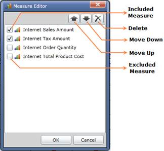

Measure Editor is a dialog window that displays the collection measures in the current report. You can exclude, arrange and delete measures from the current report using Measure Editor. The node in the Measure Editor has two states namely:
Check – The corresponding measure was included in the result set.
Unchecked – The corresponding measure was excluded from the result set.
Structure of Measure Editor

Figure 16: Measure Editor